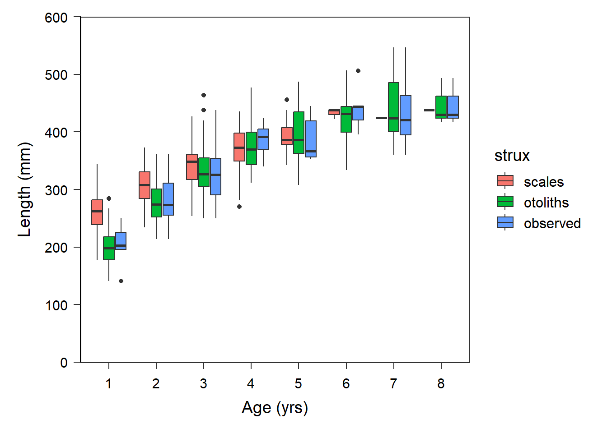
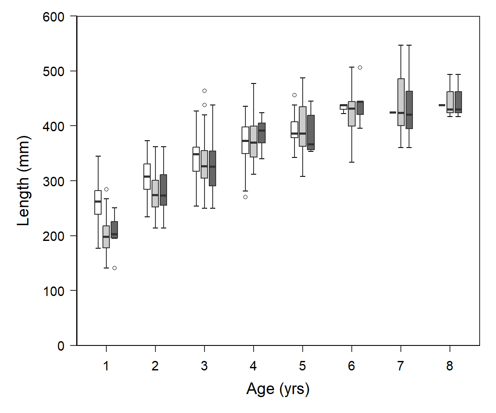

{kind=link}
library(tidyverse) # for dplyr, ggplot2 packagesIntroduction
Quist et al. (2022) examined three structures (scales, sectioned otoliths, and whole otoliths) to estimate age of Yellowstone Cutthroat Trout (Oncorhynchus clarkii bouvieri). In a previous post I largely recreated their Figures 1 and 2 related to age precision and bias between readers and between structures. In this post I attempt to recreate their Figure 3 which examined back-calculated lengths-at-age between structures (and observed lengths-at-age).
Getting Setup
The following packages are loaded for use below.
The following ggplot2 theme was used below.1
1 See this post for more information on creating and using ggplot2 themes.
theme_q <- function(base_size=14) {
theme_bw(base_size=base_size) +
theme(
# margin for the plot
plot.margin=unit(c(0.5,0.5,0.5,0.5),"cm"),
# set axis label (i.e., title) colors and margins
axis.title.y=element_text(colour="black",margin=margin(t=0,r=10,b=0,l=0)),
axis.title.x=element_text(colour="black",margin=margin(t=10,r=0,b=0,l=0)),
# set tick label color, margin, and position and orientation
axis.text.y=element_text(colour="black",margin=margin(t=0,r=5,b=0,l=0),
vjust=0.5,hjust=1),
axis.text.x=element_text(colour="black",margin=margin(t=5,r=0,b=0,l=0),
vjust=0,hjust=0.5,),
# set size of the tick marks for y- and x-axis
axis.ticks=element_line(linewidth=0.5),
# adjust length of the tick marks
axis.ticks.length=unit(0.2,"cm"),
# set the axis size,color,and end shape
axis.line=element_line(colour="black",linewidth=0.5,lineend="square"),
# adjust size of text for legend
legend.text=element_text(size=12),
# remove grid
panel.grid=element_blank()
)
}
Data
Unfortunately data for constructing Figure 3 was not provided along with the published paper.2 Thus, I simulated similar data using my FSAsim package. Given that FSAsim is a work-in-progress I don’t show the code for simulating the data. However, the data can be downloaded as a CSV file from here.
2 The supplement with the published paper only included the age estimates data.
The resultant df data frame has the following four variables:
strux: Identifies the structure used to assign age (sectionedotolithsorscales), or whether the data areobservedlengths and ages.id: Unique fish identifier (not used in this analysis).age: Age-at-capture forobserveddata or an age back-calculated to forotolithsandscales.len: Length-at-capture forobserveddata or a back-calculated length forotolithsandscales.
FSA::peek(df,n=10)#R| strux id age len
#R| 1 otoliths 1 1 178
#R| 80 otoliths 25 4 326
#R| 159 otoliths 53 3 464
#R| 239 otoliths 73 1 202
#R| 319 otoliths 95 5 371
#R| 398 scales 19 1 262
#R| 478 scales 46 1 254
#R| 558 scales 77 2 283
#R| 637 observed 20 6 444
#R| 717 observed 100 3 353
Recreating Figure 3
Figure 3 in Quist et al. (2022) is a boxplot. geom_boxplot() in ggplot2 requires that the x-axis variable be “discrete” (or categorical). Thus, a new variable, fage, is created that is a factored (i.e., categorical) version of age. Additionally, the order of strux is alphabetical by default, which is not the order plotted by Quist et al. (2022). Thus, strux is modified below to set the order of the levels.
df <- df |>
mutate(fage=factor(age),
strux=factor(strux,levels=c("scales","otoliths","observed")))The default use of geom_boxplot() gets us close to Figure 3 in Quist et al. (2022).
ggplot(data=df,mapping=aes(x=fage,y=len,fill=strux)) +
geom_boxplot() +
scale_x_discrete(name="Age (yrs)") +
scale_y_continuous(name="Length (mm)",
limits=c(0,600),breaks=seq(0,600,100),
expand=expansion(mult=0)) +
theme_q()
However, we need to adjust the colors used, remove the legend, narrow the boxes, put “caps” on the ends of the whiskers, and change the outliers to open circles.
The colors to be used are defined in the named vector clrs below. This will be given to scale_fill_manual() below.
clrs <- c("scales"="white","otoliths"="gray80","observed"="gray40")The width of the boxes is set in boxwid and the width of the “caps” on the whisker is set at 80% of this box width. The distance between adjacent boxes at the same age is controlled with position= with a function called position_dodge(). It was not clear to me what to set these values to but I settled on the following after a little back-and-forth tinkering.3
3 The dodge width should be larger than the box width so that the boxes don’t touch.
boxwid <- 0.4 # box width
capwid <- 0.8*boxwid # whisker cap width
boxsep <- position_dodge(width=0.5) # dodge amount between boxesThe use of stat_boxplot() below is a trick to put an “error bar” behind the boxplot, which gives the impression that the whiskers are “capped” (i.e., the error bar caps are in the same place that the whisker caps would be). The shape4, boundary color, and fill for the outlier marks are defined with outlier.shape=, outlier.color=, and outlier.fill=, respectively. Finally, show.legend=FALSE in geom_boxplot() is used to remove the legend.
4 “21” means a circle that has both a boundary and a fill color.
ggplot(data=df,mapping=aes(x=fage,y=len,fill=strux)) +
stat_boxplot(geom="errorbar",width=capwid,position=boxsep) +
geom_boxplot(width=boxwid,position=boxsep,
outlier.shape=21,outlier.color="black",outlier.fill="white",
show.legend=FALSE) +
scale_fill_manual(values=clrs) +
scale_x_discrete(name="Age (yrs)") +
scale_y_continuous(name="Length (mm)",
limits=c(0,600),breaks=seq(0,600,100),
expand=expansion(mult=0)) +
theme_q()
References
Quist, M. C., D. K. McCarrick, and L. M. Harris. 2022. Comparison of structures used to estimate age and growth of Yellowstone Cutthroat Trout. Journal of Fish and Wildlife Management 13(2):544–551.
Reuse
Citation
BibTeX citation:
@misc{h.ogle2023,
author = {Derek H. Ogle},
title = {Quist Et Al. (2022) {Back-Calculation} {Figure}},
date = {2023-02-14},
url = {https://fishr-core-team.github.io/fishR//blog/posts/2023_2_14_Quistetal2022_BCData},
langid = {en}
}
For attribution, please cite this work as:
Derek H. Ogle. 2023, February 14. Quist
et al. (2022) Back-Calculation Figure.